Energy-Based Models (EBMs) are a flexible class of generative models that decouple probabilistic modeling from the generation process. This decoupling directly enables compositional generation and inference-time scaling, where sample quality can be refined simply by increasing sampling steps. However, severe challenges in high-dimensional sampling and training instabilities with deep architectures have restricted EBMs to low-dimensional regimes.
To resolve these bottlenecks, we introduce the Transformer Energy-Based Model (TEM), a scalable transformer energy function operating entirely within a latent space. On top of this backbone, we extract energies at multiple layers and sum them, composing complementary constraints from local texture to global semantics. Furthermore, two components make this high-quality at scale: Positive Representation Alignment (PRA), which supervises TEM's intermediate representations with a vision foundation model, and advanced sampling strategies that improve sample quality at inference.
TEM-XL achieves an FID-50K of 3.82 on class-conditional ImageNet 256×256 without classifier-free guidance, showing that a contrastive EBM can generate high-fidelity images. On ImageNet 512×512, TEM achieves an FID-50K of 8.24, demonstrating that the approach scales to higher resolution. We further validate the core promises of EBMs: compositional generation, zero-shot inpainting, and out-of-distribution detection.
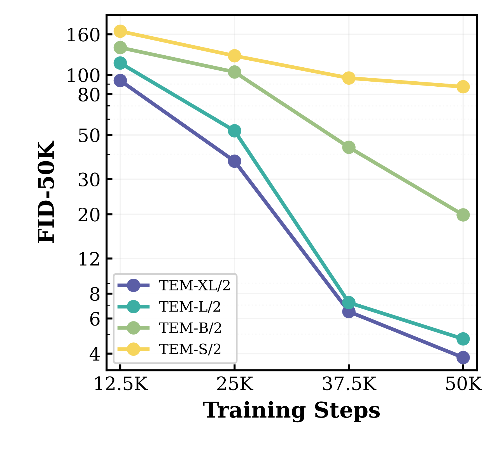
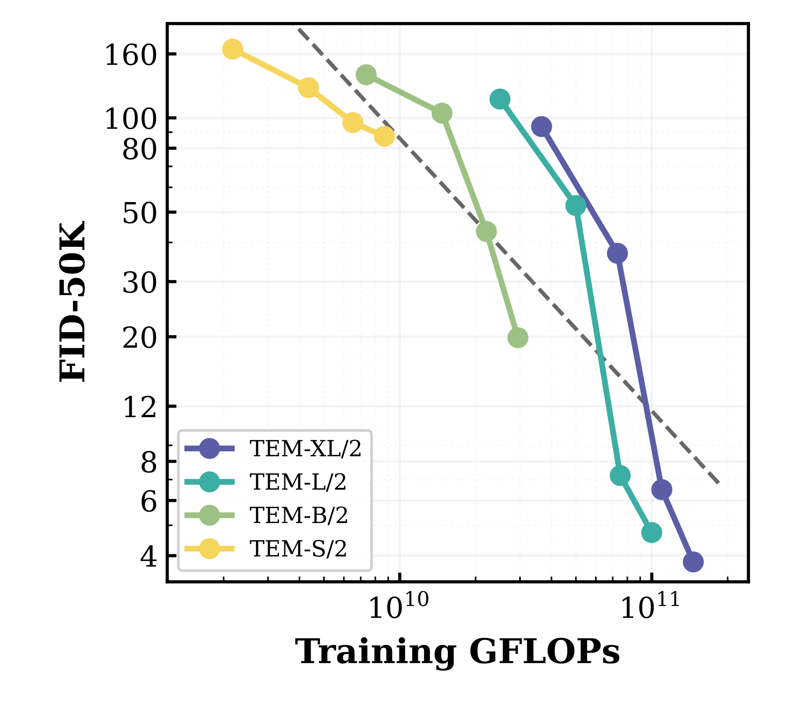
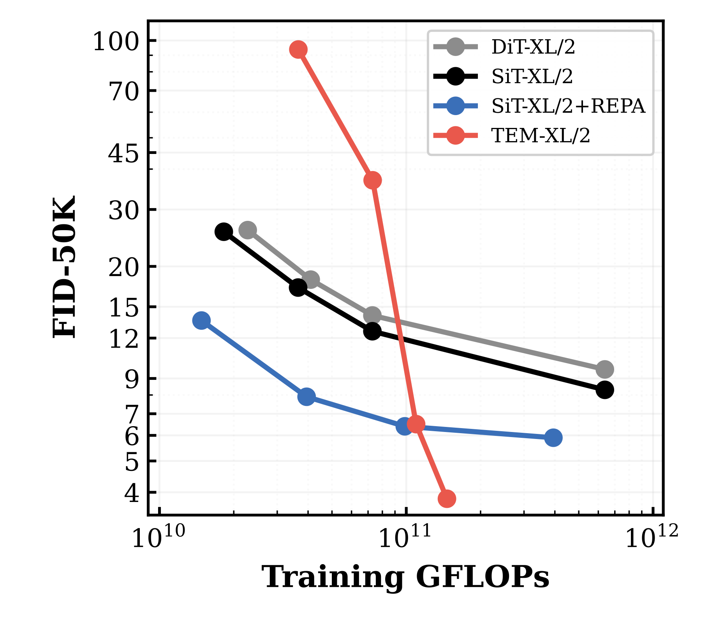
Left: FID-50K vs. training steps across model sizes; larger models are better at every checkpoint. Middle: all four sizes follow a consistent compute–quality trend. Right: TEM-XL against DiT-XL, SiT-XL and SiT-XL+REPA: TEM scales more steeply and reaches a lower unguided FID with less training compute.
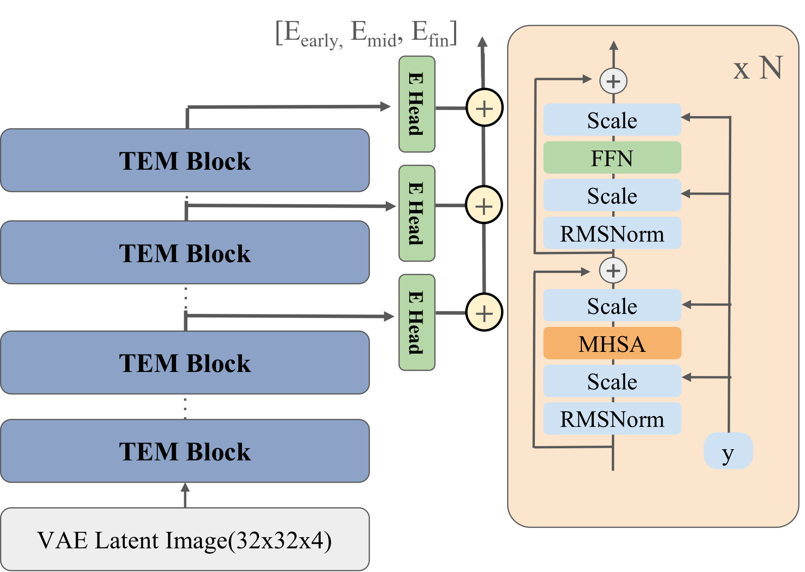
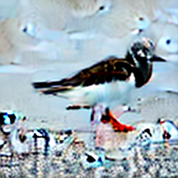
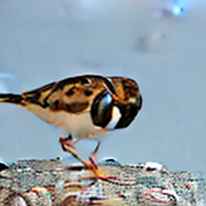
Multi-layer energy composition. TEM processes VAE-encoded latent tokens through a stack of TEM blocks, and energy heads at early, middle and final depths each output a scalar energy. Sampling from one head at a time shows what each one enforces: the early head recovers local texture without global structure, the middle head captures object layout without fine detail, and the final head keeps only coarse semantics. Sampling from their sum satisfies all three at once.
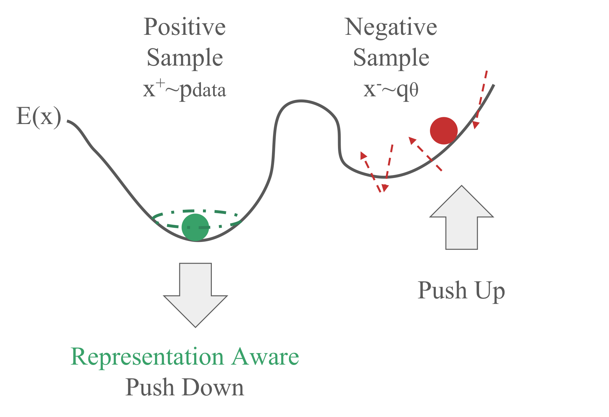
Training strategy. Contrastive training pushes down the energy of data samples $x^+$ and pushes up the energy of MCMC negatives $x^-$, while Positive Representation Alignment (PRA) aligns the model's internal features with a frozen vision foundation model.
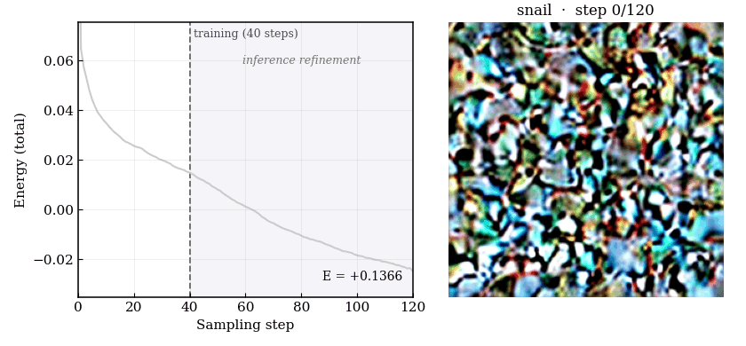
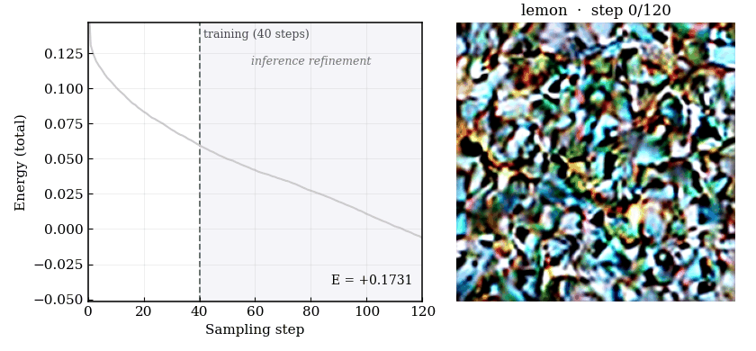
Energy decreases steadily as sampling proceeds. At the training horizon (40 steps) coarse structure is established but residual noise remains; continuing past it produces increasingly sharp, class-typical images.
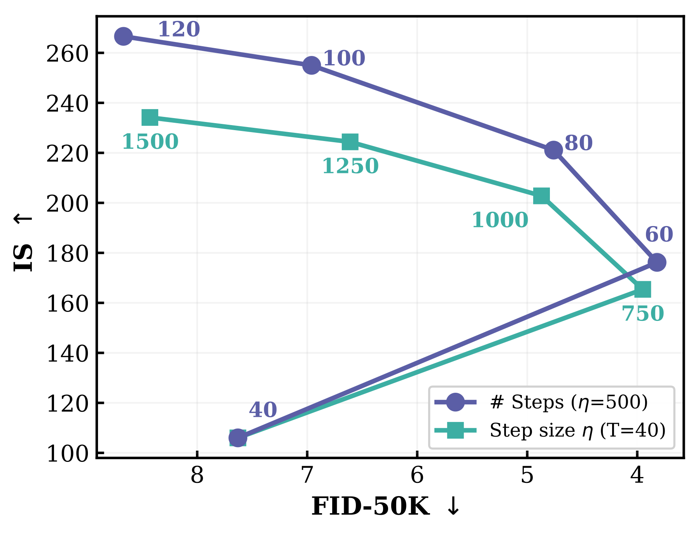
| Model | Steps | FID↓ | IS↑ | Prec. | Rec. |
|---|---|---|---|---|---|
| TEM-XL | 40 | 7.63 | 106.0 | 0.65 | 0.65 |
| TEM-XL | 60 | 3.82 | 176.2 | 0.76 | 0.57 |
| TEM-XL | 80 | 4.72 | 221.1 | 0.81 | 0.51 |
FID-50K vs. Inception Score for TEM-XL when increasing the number of sampling steps (blue) or the step size (green) from the training configuration ($T=40$, $\eta=500$). A moderate increase improves both metrics; beyond that, IS keeps rising while FID degrades. This mirrors the trade-off controlled by classifier-free guidance, from a single network with no retraining.
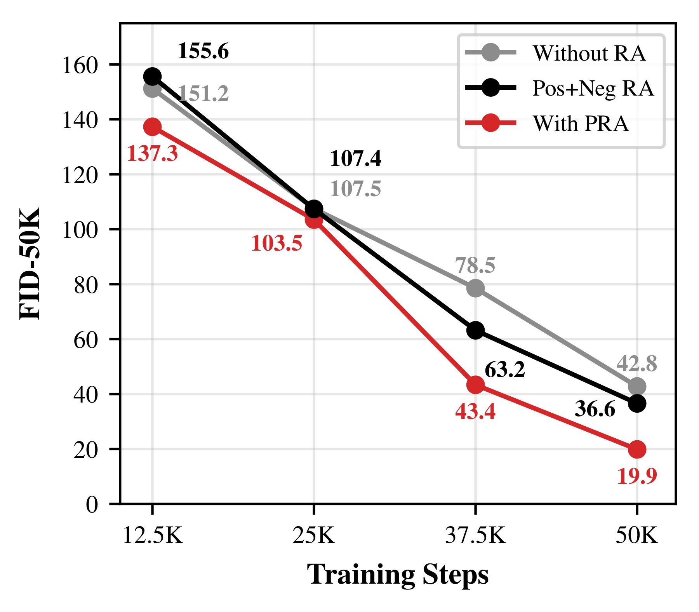
PRA lowers FID-50K of TEM-B from 42.8 to 19.9 at 50K steps. Also aligning negative samples (Pos+Neg RA) still helps over no alignment but reaches only 36.6, erasing most of the gain: negatives give the wrong alignment target.
Unlike representation alignment in diffusion models, where a noisy input is aligned with features of its clean counterpart, both TEM and the VFM see the same clean $x^+$. PRA does not guide any sampling trajectory; it shapes the geometry of the low-energy region directly.
For two energy-defined distributions, the product $p_1(x)p_2(x) \propto \exp(-(E_1(x)+E_2(x)))$. Sampling with the summed energy gives images that satisfy both concepts at once.
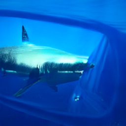
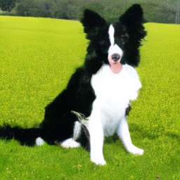
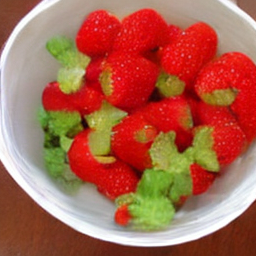
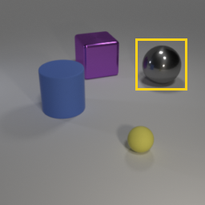
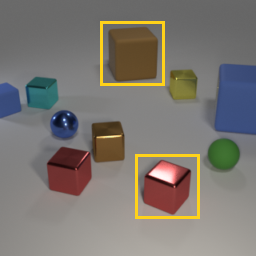
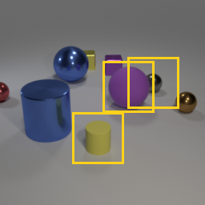
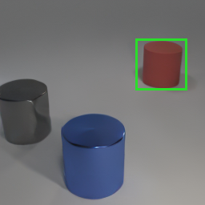
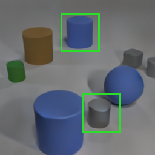
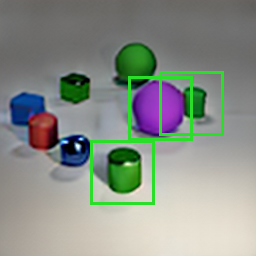
| Model | 1 obj. | 2 obj. | 3 obj. |
|---|---|---|---|
| Comp. Diffusion | 0.863 | 0.598 | 0.262 |
| TEM (ours) | 0.956 | 0.766 | 0.274 |
CLEVR 256×256 compositional generation. Top row: conditioning inputs; yellow boxes are the specified object positions. Bottom row: TEM-B samples; green boxes mark detected objects. Table: object detection success rate (↑) over 1,000 scenes, compared with Composable Diffusion.
Because TEM defines a single energy over image latents, inpainting is just sampling on the missing region while resetting the observed latents to their encoded values after each step. The image is masked before VAE encoding, so no ground-truth content leaks into the hole.
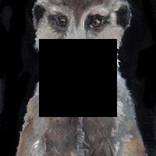
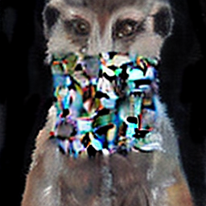
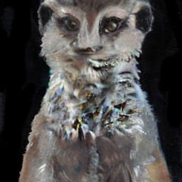
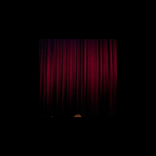
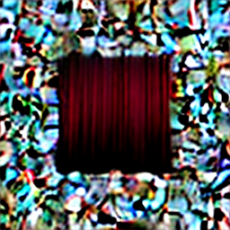
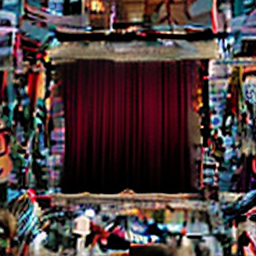
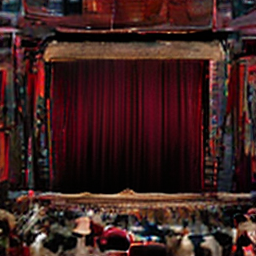
Inpainting a meerkat (top) and a movie theater (bottom) across sampling steps.
A single forward pass of the unconditional energy $E_\theta(x)$ gives an OOD score, with no task-specific training, labels, or calibration. Diffusion baselines are scored by their denoising residual with one network evaluation. SiT+REPA receives the same DINOv2 alignment yet scores close to SiT, so alignment alone does not explain the gap: the scalar energy does.
| AUROC↑ | DiT | SiT | SiT-REPA | TEM |
|---|---|---|---|---|
| iNaturalist | 0.777 | 0.733 | 0.780 | 0.904 |
| Textures | 0.439 | 0.426 | 0.438 | 0.687 |
| Places365 | 0.669 | 0.621 | 0.481 | 0.636 |
| SUN | 0.505 | 0.513 | 0.500 | 0.640 |
| Average | 0.598 | 0.573 | 0.549 | 0.717 |
Uncurated class-conditional ImageNet 256×256 samples from TEM-XL.
@article{lee2026tem,
author = {Lee, Jungsoo and Gladstone, Alexi and Du, Yilun},
title = {Scaling Transformer Energy-Based Models for High Quality Image Synthesis},
year = {2026},
}